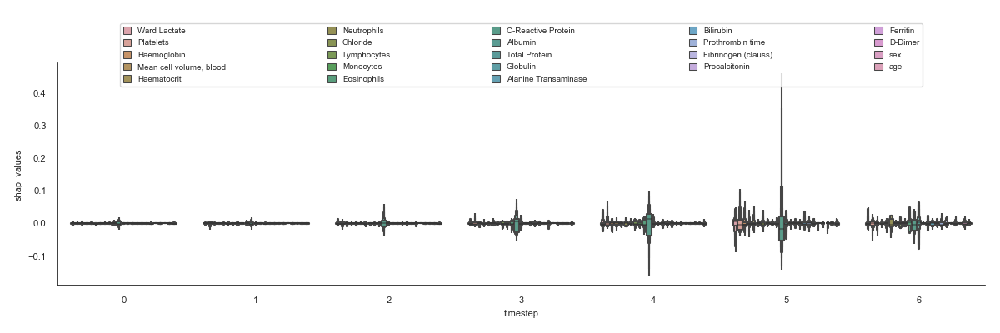
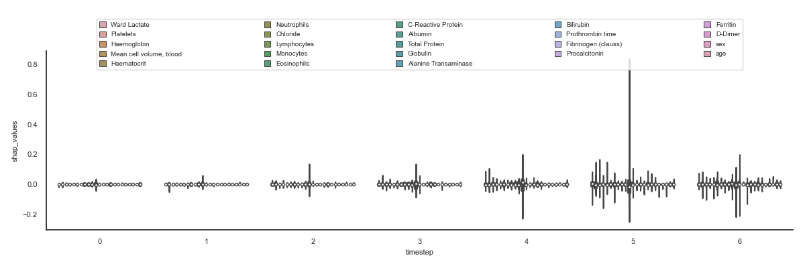

Note
Click here to download the full example code
30. Sample shap.csv boxplot
The aim is to visualise all the features for all the timesteps to quickly see which shap values are higher and therefore influence more in the result.
Note
Using plotly we could interact with the outcome!
- 
- 

Out:
Unnamed: 0 sample timestep features feature_values shap_values
0 0 0 0 Ward Lactate 0.0 0.000652
4 4 0 0 Platelets 0.0 -0.001705
5 5 0 0 Haemoglobin 0.0 -0.000918
6 6 0 0 Mean cell volume, blood 0.0 -0.000654
7 7 0 0 Haematocrit 0.0 -0.000487
16 16 0 0 Neutrophils 0.0 0.002521
17 17 0 0 Chloride 0.0 -0.000858
18 18 0 0 Lymphocytes 0.0 -0.002920
19 19 0 0 Monocytes 0.0 -0.002224
20 20 0 0 Eosinophils 0.0 -0.005246
13 # Libraries
14 import seaborn as sns
15 import pandas as pd
16 import numpy as np
17 import matplotlib as mpl
18 import matplotlib.pyplot as plt
19
20 from scipy import stats
21 from matplotlib.colors import LogNorm
22
23 sns.set_theme(style="white")
24
25 # See https://matplotlib.org/devdocs/users/explain/customizing.html
26 mpl.rcParams['axes.titlesize'] = 8
27 mpl.rcParams['axes.labelsize'] = 8
28 mpl.rcParams['xtick.labelsize'] = 8
29 mpl.rcParams['ytick.labelsize'] = 8
30 mpl.rcParams['legend.fontsize'] = 7
31 mpl.rcParams['legend.handlelength'] = 1
32 mpl.rcParams['legend.handleheight'] = 1
33 mpl.rcParams['legend.loc'] = 'upper left'
34
35 # Features
36 features = [
37 'Ward Lactate',
38 #'Ward Glucose',
39 #'Ward sO2',
40 #'White blood cell count, blood',
41 'Platelets',
42 'Haemoglobin',
43 'Mean cell volume, blood',
44 'Haematocrit',
45 #'Mean cell haemoglobin conc, blood',
46 #'Mean cell haemoglobin level, blood',
47 #'Red blood cell count, blood',
48 #'Red blood cell distribution width',
49 #'Creatinine',
50 #'Urea level, blood',
51 #'Potassium',
52 #'Sodium',
53 'Neutrophils',
54 'Chloride',
55 'Lymphocytes',
56 'Monocytes',
57 'Eosinophils',
58 'C-Reactive Protein',
59 'Albumin',
60 #'Alkaline Phosphatase',
61 #'Glucose POCT Strip Blood',
62 'Total Protein',
63 'Globulin',
64 'Alanine Transaminase',
65 'Bilirubin',
66 'Prothrombin time',
67 'Fibrinogen (clauss)',
68 'Procalcitonin',
69 'Ferritin',
70 'D-Dimer',
71 'sex',
72 'age'
73 ]
74
75 # Load data
76 data = pd.read_csv('../../datasets/shap/shap.csv')
77
78 # Filter
79 data = data[data.features.isin(features)]
80
81 # Show
82 print(data.head(10))
83
84
85 # .. todo:: Change flier size, cmap, ...
86
87
88 def configure_ax(ax):
89 sns.despine(ax=ax)
90 lg = ax.legend(loc='upper center',
91 bbox_to_anchor=(0.05, 1.15, 0.9, 0.1),
92 borderaxespad=2, ncol=5, mode='expand')
93 plt.tight_layout()
94
95 # Boxenplot
96 plt.figure(figsize=(12, 4))
97 ax = sns.boxenplot(data, x='timestep', y='shap_values',
98 hue='features', saturation=0.5, showfliers=False)
99 configure_ax(ax)
100
101 # Violinplot
102 plt.figure(figsize=(12, 4))
103 ax = sns.violinplot(data, x='timestep', y='shap_values',
104 hue='features', saturation=0.5, showfliers=False,
105 whis=1.0)
106 configure_ax(ax)
107
108 # Boxplot
109 plt.figure(figsize=(12, 4))
110 ax = sns.boxplot(data, x='timestep', y='shap_values',
111 hue='features', saturation=0.5, showfliers=False,
112 whis=1.0)
113 configure_ax(ax)
114
115
116 # Show
117 plt.show()
Total running time of the script: ( 0 minutes 5.496 seconds)